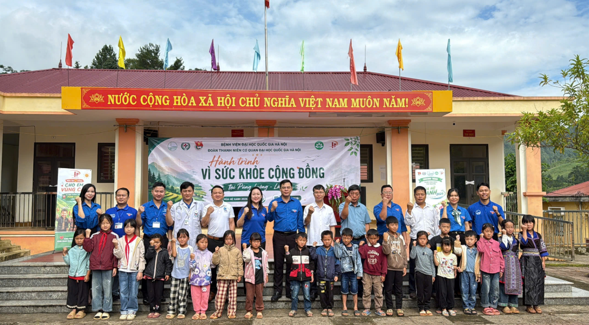

Để phát huy tối đa thế mạnh chuyên ngành, năng lực cá nhân và nhiệt huyết của từng chiến sĩ tình nguyện, chiến dịch Mùa Hè Xanh tổ chức 3 đội hình chuyên trách mũi nhọn.
1. Đội Hình Tiếp Sức Cộng Đồng
Lực lượng nòng cốt an sinh

Hình 3.1: Lực lượng sinh viên tình nguyện Đội hình Tiếp sức cộng đồng hỗ trợ sửa chữa nhà tình nghĩa tại vùng ngoại thành.
Giới thiệu: Đội hình Tiếp sức cộng đồng là lực lượng nòng cốt đảm nhiệm các hoạt động an sinh xã hội, kết nối tấm lòng của tuổi trẻ sinh viên với nhân dân địa phương, đặc biệt là các gia đình chính sách, gia đình có công với cách mạng và hộ nghèo neo đơn.
Nhiệm Vụ Trọng Tâm
Thăm hỏi, chăm sóc và trao tặng các phần quà nhu yếu phẩm cho Mẹ Việt Nam Anh hùng, thương bệnh binh và gia đình chính sách.
Sơn sửa nhà tình nghĩa, làm mới hệ thống dây điện an toàn phòng chống cháy nổ cho các hộ dân có hoàn cảnh neo đơn.
Nâng cấp đường giao thông liên ấp, cải tạo sân chơi và nhà sinh hoạt cộng đồng tại địa phương.
Tổ chức các buổi tuyên truyền pháp luật, hướng dẫn người dân cài đặt và sử dụng dịch vụ công trực tuyến VNeID.
Tổ chức các đêm giao lưu văn nghệ phục vụ bà con nhân dân thắt chặt tình quân dân.
Đối Tượng Phù Hợp & Tiêu Chuẩn
Sinh viên có tinh thần cởi mở, nhiệt huyết, giao tiếp khéo léo, yêu thích các hoạt động xã hội cộng đồng.
Ưu tiên sinh viên các khối ngành: Công tác xã hội, Xã hội học, Điện - Điện tử, Kỹ thuật xây dựng, Công nghệ thông tin...
Có sức khỏe tốt, sẵn sàng lao động tay chân, thích nghi tốt với điều kiện sinh hoạt nông thôn.
Có tài lẻ về văn hóa văn nghệ, dẫn chương trình, đàn hát là lợi thế rất lớn.
Hoạt động tiêu biểu của đội hình:
Sơn sửa nhà & không gian cộng đồng: Cải tạo toàn diện diện mạo nhà văn hóa ấp và nhà tình thương.
Hỗ trợ thủ tục hành chính & công nghệ: Đưa công nghệ số đến với từng hộ dân ngoại thành.
Hình 3.2: Đội hình Môi trường xanh chung tay vớt rác, khai thông dòng chảy kênh rạch và trồng cây phủ xanh.
Giới thiệu: Đội hình Môi trường xanh là lực lượng tiên phong trong việc lan tỏa lối sống xanh, ứng phó biến đổi khí hậu, làm sạch môi trường tự nhiên và xây dựng cảnh quan địa phương xanh - sạch - đẹp - an toàn.
Nhiệm Vụ Trọng Tâm
Xóa các "điểm đen" rác thải tự phát, khơi thông các dòng kênh bị ứ đọng rác và lục bình.
Trồng mới hàng ngàn cây xanh bóng mát, cây chắn sóng ven biển hoặc xây dựng các "Tuyến đường hoa thanh niên".
Tuyên truyền, phát tờ rơi hướng dẫn phân loại rác thải tại nguồn và tái chế đồ nhựa dùng một lần.
Tập huấn cho bà con các mô hình nông nghiệp sinh thái, ủ phân hữu cơ vi sinh từ phụ phẩm nông nghiệp.
Tổ chức ngày hội "Đổi rác lấy cây xanh", lan tỏa thông điệp sống xanh trong cộng đồng cư dân.
Đối Tượng Phù Hợp & Tiêu Chuẩn
Sinh viên yêu thiên nhiên, đam mê bảo vệ môi trường, không ngại nắng gió và công việc nặng nhọc ngoài trời.
Ưu tiên sinh viên các ngành: Khoa học Môi trường, Sinh học, Công nghệ sinh học, Nông nghiệp, Lâm nghiệp, Kỹ thuật môi trường...
Thể lực dẻo dai, có tính kỷ luật cao và tinh thần đồng đội phối hợp ăn ý.
Hoạt động tiêu biểu của đội hình:
Trồng cây xanh & gây rừng: Phủ xanh các tuyến đường giao thông và khuôn viên trường học.
Dọn vệ sinh khu dân cư: Xóa bỏ triệt để các bãi rác tự phát, làm sạch cảnh quan công cộng.
Tuyên truyền bảo vệ môi trường: Vận động nhân dân hạn chế tối đa túi nilon và đồ nhựa khó phân hủy.
Hình 3.3: Chiến sĩ Đội hình Vì trẻ em sinh hoạt tập thể và tặng quà khuyến học cho thiếu nhi địa phương.
Giới thiệu: Đội hình Vì trẻ em là cầu nối yêu thương, đồng hành cùng thiếu nhi tại các địa phương khó khăn, mang đến một mùa hè vui tươi, bổ ích, an toàn và tràn ngập tiếng cười cho các em nhỏ.
Nhiệm Vụ Trọng Tâm
Mở các lớp ôn tập văn hóa hè môn Toán, Tiếng Việt, Tiếng Anh cho học sinh tiểu học và THCS có hoàn cảnh khó khăn.
Tổ chức các sân chơi cuối tuần, trò chơi dân gian, liên hoan văn nghệ và thi vẽ tranh theo chủ đề.
Giáo dục kỹ năng sống thực tiễn: phòng chống đuối nước, kỹ năng thoát hiểm khi hỏa hoạn, phòng chống xâm hại trẻ em.
Vận động quyên góp, trao tặng học bổng, sách vở, cặp sách, xe đạp cho học sinh nghèo vượt khó học giỏi.
Sửa chữa, cải tạo và trang trí lại các phòng học mầm non, thư viện xanh tại các điểm trường lẻ.
Đối Tượng Phù Hợp & Tiêu Chuẩn
Sinh viên giàu lòng kiên nhẫn, yêu mến trẻ nhỏ, có sự dịu dàng và tinh tế trong nắm bắt tâm lý lứa tuổi.
Ưu tiên sinh viên các ngành: Sư phạm, Ngoại ngữ, Tâm lý học, Giáo dục mầm non, Văn hóa nghệ thuật, Công tác đoàn - đội...
Có năng khiếu kể chuyện, quản trò, tổ chức trò chơi tập thể hoặc vẽ tranh, múa hát, võ thuật.
Hoạt động tiêu biểu của đội hình:
Tổ chức sinh hoạt thiếu nhi: Sân chơi bổ ích ngày hè rèn luyện thể chất và gắn kết bạn bè.
Dạy học & Trao học bổng: Tiếp sức ước mơ đến trường cho trẻ em nghèo vượt khó.